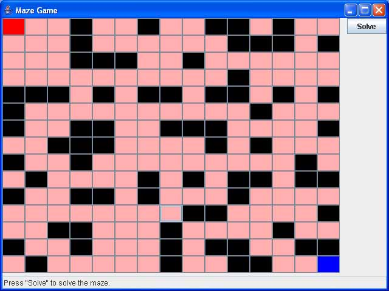
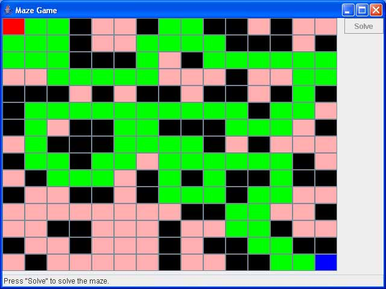

Tutorial
5) Amazing
week: February 9-13
Description
The purpose of this exercise is to
get practice solving a problem using recursion. Again what makes this
tutorial
challenging is that there is way too much code to examine all of it, and you need to understand how to solve problems using recursion
to complete this tutorial. You
will not be able to read
and understand all the code provided in the time allocated for
the tutorial.
The demonstration program produces a
maze that consists of cells. The black cells are walls and the pink
cells are cells you can travel along. The red cell in the upper left is
the starting location and the blue cell in the lower right is the
finish location. Each time the game opens the maze looks different,
however you can toggle cells between being walls, or not, by
clicking on them with your mouse.

The game has a solve button. When the solve button is pressed a path
from the start cell to the finish cell must be found, if one exists,
and shown in green. If no path is possible nothing gets shown. The path
does not have to be a shortest path, just any set of adjacent cells
that connects the start to the finish. Compile and run the MazeGame class, which has the main() method.

Currently when the Solve button
is pressed it invokes a solve()
method in the Maze class.
The solve() method in
turn invokes the findPathFrom(Cell
aCell) method. This is the method you need to write. It needs to
recursively find a path from aCell
to the finish location.
The comments in this recursive method explains the strategy for how to
solve the problem. You will not need to modify any of the other code.
In fact, the only code you will need to even look at is the Maze class and the Cell class. Of course
you can explore the rest of the code to see how it works if you want.
Here are some specific suggestions for writing the findPathFrom(Cell aCell) method.
Specific Requirements and Suggestions
Look at the comments in the Maze
class's findPathFrom(Cell
aCell) method. They explain the recursion strategy for solving
the problem and show where the missing code goes.
The basic strategy is as follows. Start at the starting cell and mark it as visited,
then find any of
its neighbouring cells that have not yet been visited. If a path can be
found from that neighbour to the finish set the neighbour
to be in the route and return true (meaning we found a path).
Otherwise try again from one of the other unvisited neigbours. If
no path from any of these neigbours can be found, then none exists and
you should return false.
Remember, when doing recursion a
method must call itself, but on a smaller problem, and this will
continue until a basis case problem is encountered. In this exercise
the problem gets smaller by marking cells as "visited". So the number
of unvisited cells really defines the current size of the sub-problem.
The Cell class
provides a method visit()
for marking a cell as "visited".
The Cell class provides
a method setInRoute()
which should be called if you want a cell to be in the path. This
will automatically cause that cell to be drawn in green when the window
is redrawn.
The Cell class provides a method getAnUnvisitedNeighbour() that
will return, for any cell, an adjacent neighbour that has not yet been
visited.
Demonstrate
to the tutorial TA
that you have completed
these requirements. (You need to demonstrate your tutorials results to
the TA
to get credit for the tutorial.